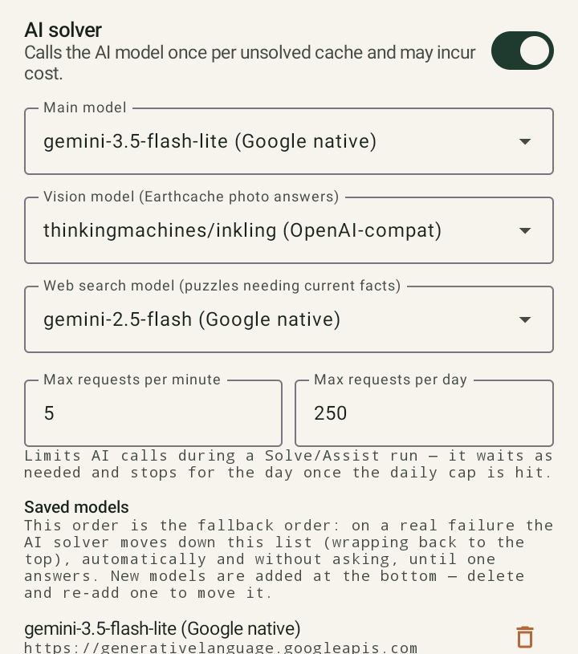
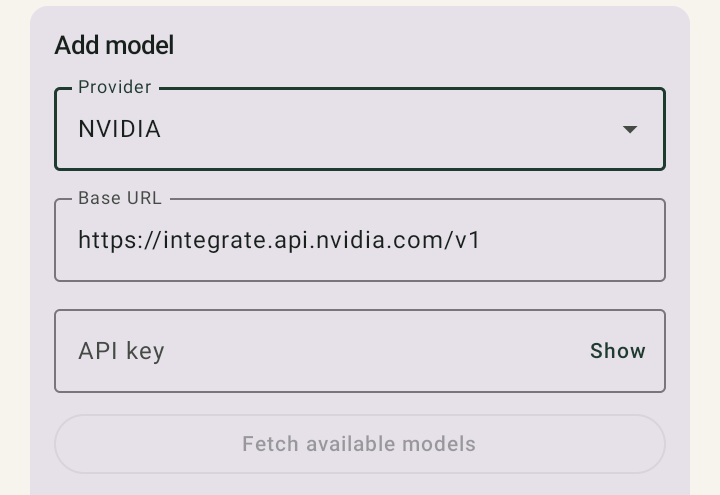

Résolution par IA¶
Si aucun des solveurs automatiques ne trouve de correspondance et que l'énigme n'est pas une énigme de terrain reconnue, GCMystSolver peut en option consulter une IA connectée.
Condition préalable¶
Il te faut ta propre clé API d'un fournisseur d'IA pris en charge, que tu enregistres dans Setup. Sans clé enregistrée, l'application fonctionne quand même — simplement sans le module IA, uniquement avec les solveurs automatiques.
Recommandation : démarrer gratuitement avec NVIDIA ou Google Gemini¶
GCMystSolver n'intègre lui-même aucun accès IA — il te faut ta propre clé API. Deux fournisseurs conviennent particulièrement bien pour débuter, car ils proposent un quota d'utilisation gratuit sans carte bancaire :
- Google Gemini (Google AI Studio) : génère une clé API gratuite en quelques clics avec un compte Google (« Get API key »). Le forfait gratuit suffit largement à un usage normal de l'application.
- NVIDIA (catalogue API NVIDIA) : un compte gratuit te donne accès à de nombreux modèles hébergés via une interface compatible OpenAI — également utilisable sans carte bancaire.
Les deux sont déjà configurés comme presets prêts à l'emploi dans GCMystSolver (voir le guide étape par étape ci-dessous) — tu n'as donc pas besoin de chercher une base URL à la main.
Ajoute plusieurs modèles
Comme l'application passe automatiquement au modèle enregistré suivant en cas d'échec (voir Rotation des modèles ci-dessous), il est intéressant d'enregistrer par exemple à la fois un modèle Gemini et un modèle NVIDIA — si le quota de l'un est épuisé, l'autre fournisseur prend automatiquement le relais.
Étape par étape¶
- Génère et copie une clé API gratuite sur aistudio.google.com ou build.nvidia.com.
- Dans GCMystSolver, va dans Setup et active l'interrupteur « AI solver ».
- Dans la section « Add model » :
- Sous « Provider », sélectionne Google Gemini ou NVIDIA (la base URL est remplie automatiquement).
- Colle la clé copiée dans le champ « API key ».
- Appuie sur « Fetch available models » — l'application charge la liste des modèles disponibles.
- Choisis un modèle sous « Model ».
- Enregistre avec « Save model ».
- Le modèle enregistré apparaît maintenant sous « Saved models » et est automatiquement utilisé comme « Main model », si aucun n'était encore défini.
- Optionnel : répète l'étape 3 pour un second fournisseur — les deux se retrouvent alors dans l'ordre de repli.


Rotation des modèles plutôt qu'un modèle de secours fixe¶
Tu enregistres une liste de tes propres modèles dans Setup. Si une requête échoue (par ex. parce qu'un fournisseur est surchargé), l'application essaie automatiquement le modèle suivant de ta liste, sans demander confirmation. C'est seulement lorsque toute la liste a été essayée sans succès pour une même requête qu'un message apparaît avec les options Cancel ou Continue.
Dans Setup → Test models, tu peux tester individuellement chaque modèle enregistré.
Estimer grossièrement le coût¶
L'assistant de configuration affiche une estimation approximative du budget en tokens : environ 900 à 1 000 tokens pour chaque cache réellement tentée par l'IA, et typiquement de plusieurs dizaines de milliers jusqu'à environ 200 000 tokens pour une PocketQuery entière d'environ 1 000 caches — selon le nombre de caches qui parviennent réellement jusqu'à l'étape IA (les solveurs automatiques en interceptent la majeure partie avant).
Transparence de la solution¶
Une solution proposée par l'IA est toujours affichée avec sa justification et marquée comme incertaine (jaune) jusqu'à ce que tu la confirmes ou la corriges — elle n'écrase jamais automatiquement une solution déjà marquée comme fiable.